Modern NLP Tools
An overview
ThinSoft - 11/4/2019 by Giorgio Sidari
Me

.
Giorgio Sidari
Software & Data Engineer
.
NLP - Chatbots
Chatbots
Conversational UI
Language understanding
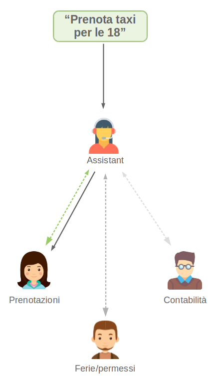
Advanced support
Machine learning for NLP
Regression
Predicts the next element in a data series
"Open your umbrella, it's..."
- blue
- five
- raining
- you
Classification
Gives a sample a label in pre-defined set
Landed now
They lost my luggage
Very polite crew
Neutral
Negative
Positive
Clustering
Discovers similar samples in a population
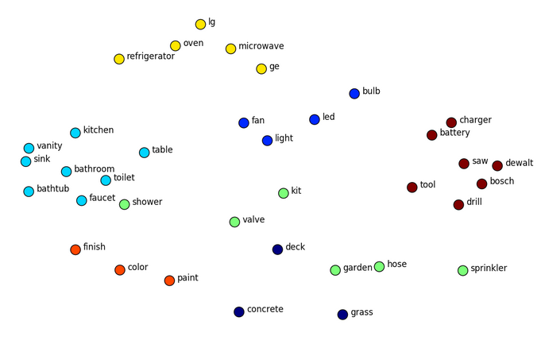Generation
Produces a complex output from a number
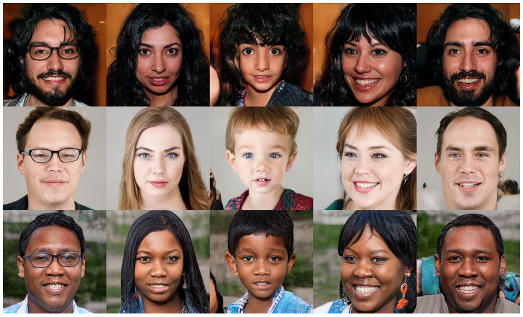Word embeddings
How can we represent mathematically
similarity and distance
between the meanings of words?
Doc2Vec - 2013
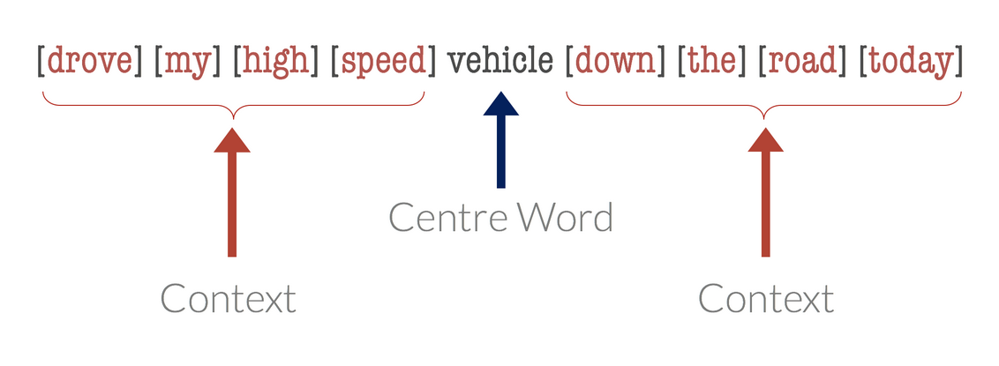Doc2Vec - 2013
CBoW - Skip-grams
Suitable words are inferred from the context
(or the other way around)
and discriminated from noise words.
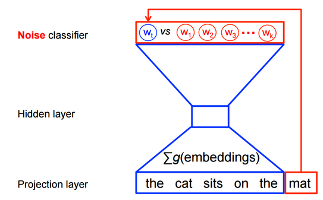
New capabilities
Exploiting latent semantics representation
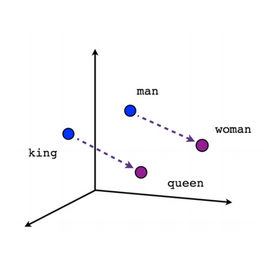
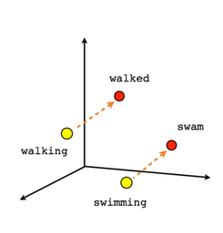
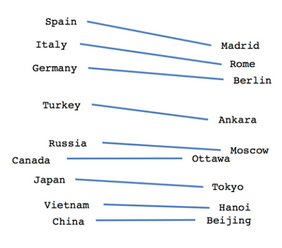
GloVe - 2014
Slightly faster
Easier to parallelize
Count-based approach
FastText - 2017
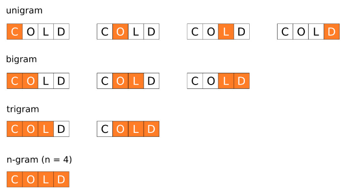ELMo - 2018
Vectors are saved with their embedding
BERT - 2018
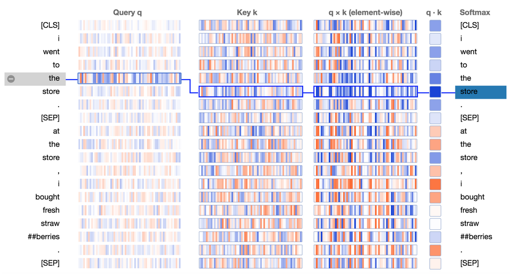Transfer learning
"Don't try to be a hero"
Andrej Karpathy
Sentence embeddings
Can we
extend the concept of embedding
to whole sentences?
Bag of Words (BoW)
Frequency of terms across documents
- I love dogs
- I hate dogs and knitting
- Knitting is my hobby and my passion 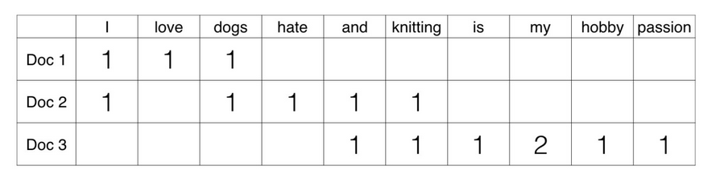
TF-IDF
Weighted BoW
- I love dogs
- I hate dogs and knitting
- Knitting is my hobby and my passion 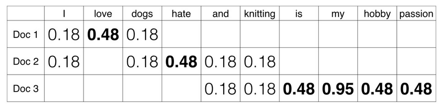
Skip-thoughts
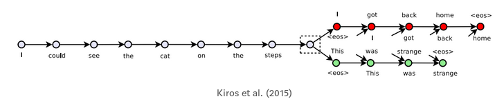word2vec extension
Quick-thoughts
Skip-gram equivalent for sentences
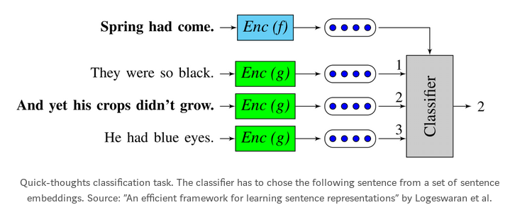
InferSent - 2017
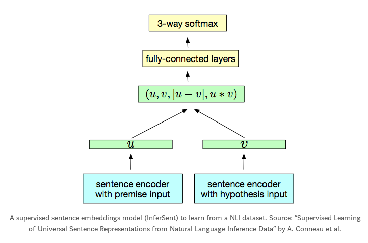
Generalizations
- Purpose Sentence Representation - 2018
- Google's Universal Sentence Encoder - 2018
State of the art
Question answering frontiers are moving further
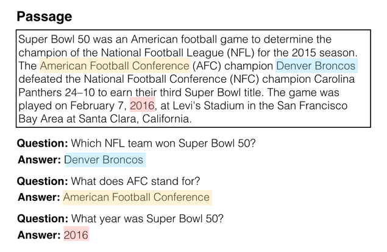
Simple QA
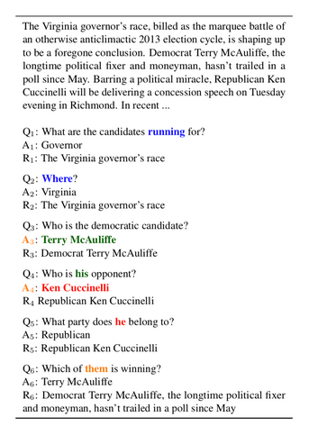
Conversational QA
Benchmarks
How is progress evaluated?
CoQA
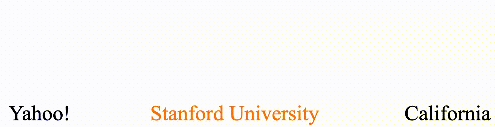
HotpotQA
"Where was Yahoo! founded?"
Machine translation
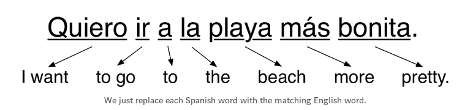 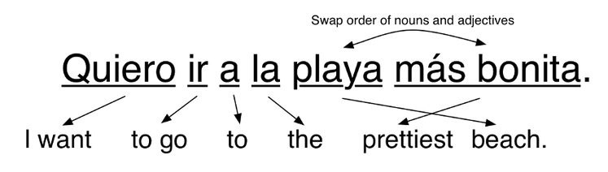MT approaches
Linguistic
Statistics (1980s)
...and ANN of course (2014)
ANN architecture for MT
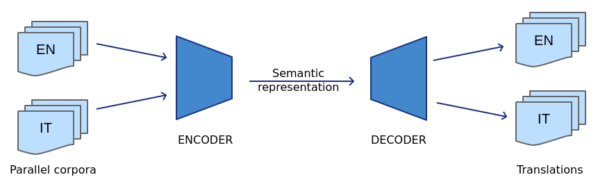MT Resources
Opus - EU documents
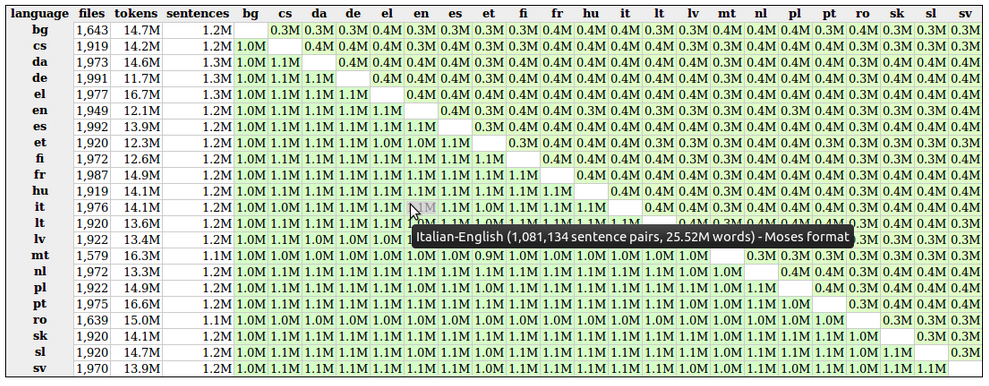MT Resources
Common Crawl
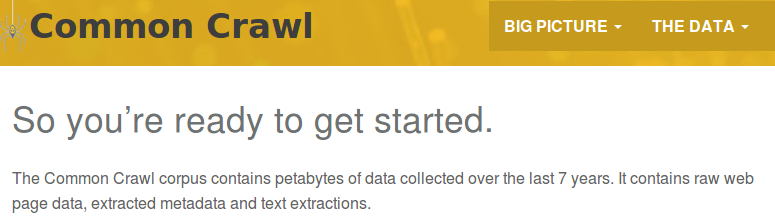THE SAINT GRAAL
ML Explainability
Variational autoencoders
Graph representations
Round table
Thanks for your attention
Let's discuss applications
Graphs
allow automated reasoning
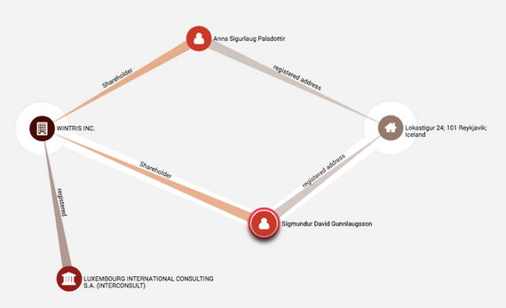